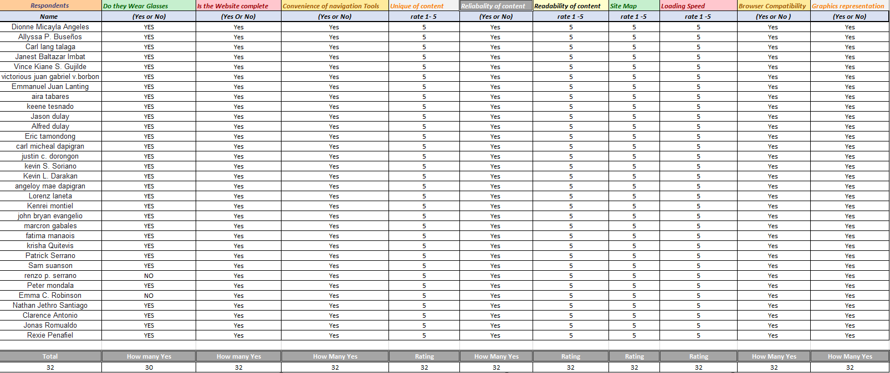
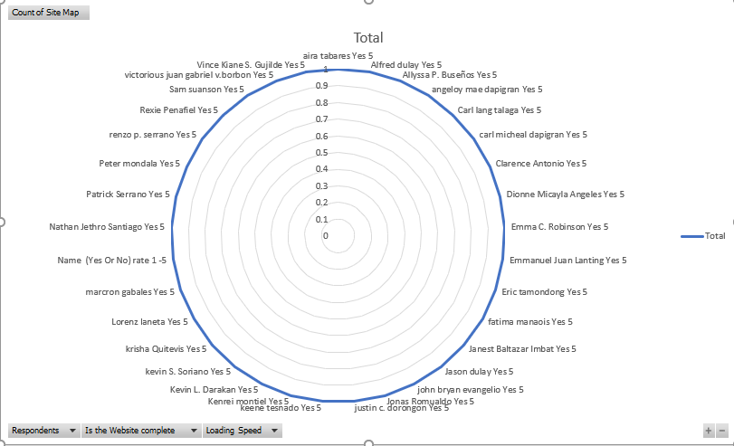

| Data from Excel | |||
|  | |||
|  |
| Interpretation of data |
| This is the data that was collected from the google form i made. and it shows that the website and pages of the created website. is clear, convinient and new to the public. in this data we see that not everyone wears glasses to see but they still find this product to be very useful to people who does. not only that i believe that the people who took this survey see's this product as the game changer of glasses. |
| Back |